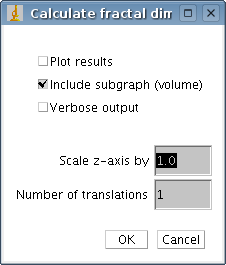

Mapfractalcount plugin documentation
Version 1.0, 2006-02-05, Per Henden.
Theory of operation
This plugin estimates fractal dimension on maps or topographic surfaces, i.e. images
where the value of each coordinate specifies the height of that coordinate,
f(x,y) = z.
It is based on the SDBC algorithm. The following improvement has been implemented:
When using SDBC, boxes are shifted in the z-direction in order to get the best fit to the image data, but not in the x- and y - direction.
This plugin translates the grid in the x- and y - direction so that a better fit is made also along those axis.
If the setting "Include subgraph" is disabled, and the setting "Number of translations" is set to 1, the original SDBC algorithm will be used.
Usage
Copy the .class file into the imagej plugin folder to use the plugin.
Open an image, select plugins and MapFractalCount.
The following dialog box will show:

- Plot results - specifies whether or not the measurements that are the basis for the estimate should be shown.
- Include sub-graph (volume) - If enabled the image is scanned to find the lowest value, i.e. the floor. When finding the number of boxes needed in the z-direction, boxes are counted starting on the floor, not on the lowest point this box covers (figure).
If disabled, only the surface is taken into account (not the volume). In the SDBC algorithm, this behaviour is disabled.
 |
|
 |
| Sub-graph included |
|
Sub-graph not included |
- Verbose output - specifies whether or not information on progress and results of box counting should be shown.
- Scale z-axis by - if the resolution in the z-direction is different from the resolution in the x-y plane, e.g.
one pixel increase along the x-axis means 1 mm on the sample, but one increase in value of that pixel means 10mm increase in height, you
can use this option to scale the z-axis accordingly. The z-values are multiplied by this number. In the example above, multiplying by 0.1 will be necessary to get meaningful results.
- Number of translations - If set to more than 1, the grid the boxes are placed in is moved around to get a better fit of the boxes to the shapes
in the image. Set to the value 2, the grid is moved 1/2 box size downwards, upwards, left and right to see if that improves the fit to the data. Improved fit means lower box count - using the translated grid fewer boxes are required to cover the shapes in the image. Set to higher values,
the grid is moved by finer steps, (N-1) steps in each direction.
A higher number will improve the reliability of the estimate, but will also drastically increase the amount of necessary computing and thus time usage.
To see how the reliability of estimates is improved, consider the following situation:
You have two images of the same sample in the same orientation.
In one of the images, the sample is slightly more to the left in the image. Without translation of the box-grid, you will get different estimates on the fractal dimension of the sample in the two images, because the grid is positioned differently relative to the sample.